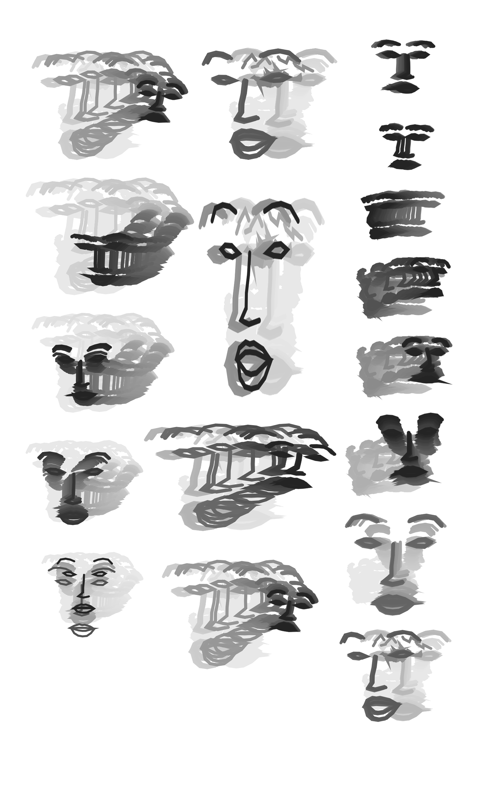
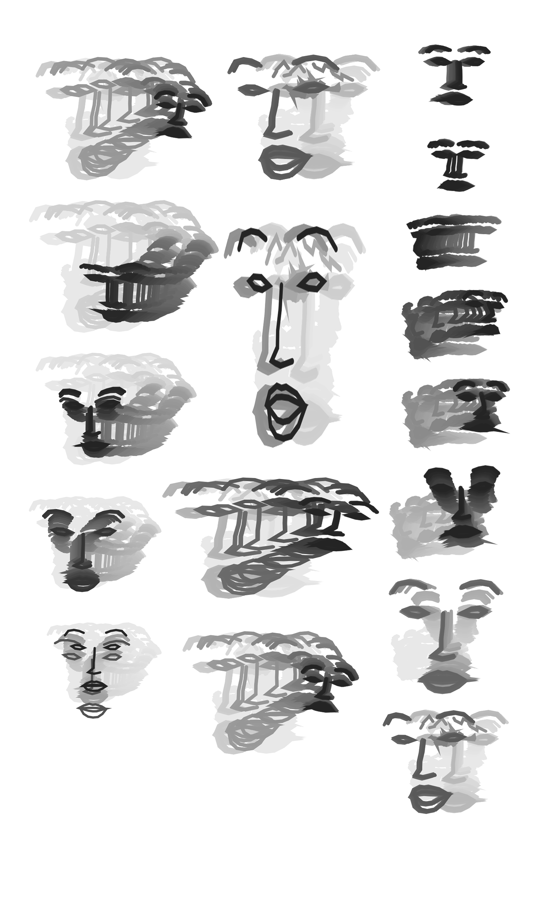

Adding emojis in text could increases the efficiency of communication, while I think:
Thus, I did this small experiment that explores the possibility of showing facial expressions as symbols in the form of writing and calligraphy. The results are generated using the ml5.js's API to face-api.js.
 
